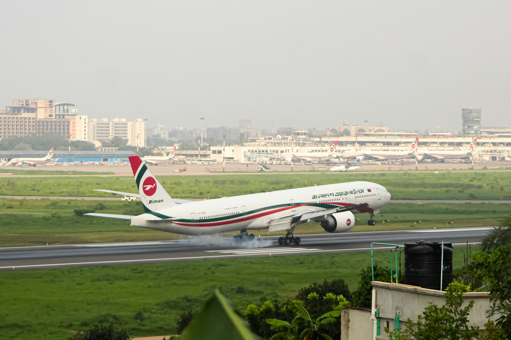
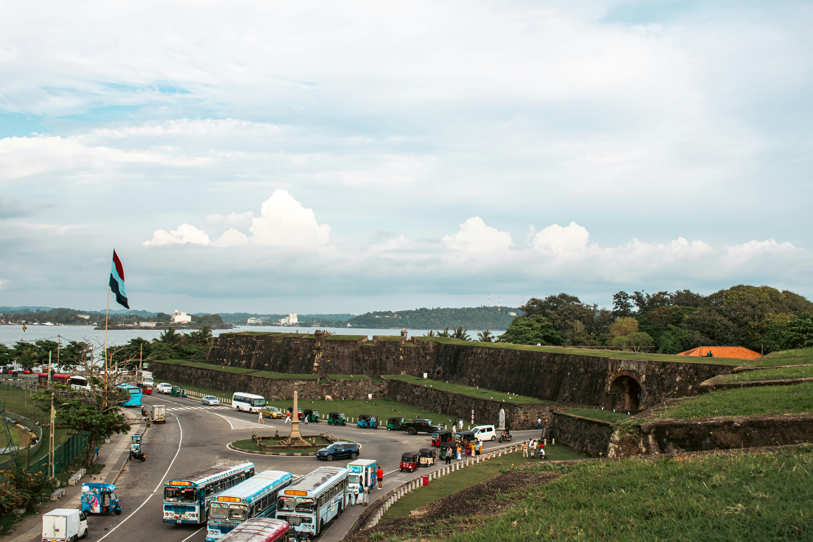

Transport & Travel
The everyday climate fight most people never notice.
Why transport matters

Transport puts out around 16% of global greenhouse gas emissions each year, making it the third-largest polluting sector on the planet. Only power generation and manufacturing come out worse (Cargoson, 2025).
Road transport does most of the damage. Cars and vans alone push out about 45% of the sector's emissions, and freight trucks add another 30%. Ships and planes each add roughly 11% (Our World in Data, 2020).
To put the scale in perspective, if global shipping was its own country, it would rank as the sixth-biggest emitter on Earth (World Economic Forum, 2018).
The daily commute

How you get to work or class every day matters more than most people think. The gap between the highest and lowest options is huge.
A petrol car emits around 170g of CO2 per passenger kilometre. A regular bus drops that to about 97g. A national train comes in at just 35g. Cycling sits between 16 and 50g depending on your diet and how efficiently you ride (Our World in Data, 2023).
The takeaway is simple. Swapping a car for a bike on short trips cuts your travel emissions by roughly 75%. Taking a train instead of driving for medium journeys cuts them by around 80%.
The flight problem

Flying is where the numbers get ugly. A single domestic flight emits 246g of CO2 per kilometre per passenger, which is more than any car on the road (Our World in Data, 2023).
That number is also worse than it looks. When planes burn fuel at cruising altitude, the emissions trap extra heat compared to the same emissions released at ground level. UK government reporting applies a 1.9x multiplier to flight emissions to reflect this.
For a 500km trip, driving alone emits around 85kg of CO2. Flying the same route emits 123kg, roughly a third higher. Trains and long-distance buses beat both by a wide margin.
The Sri Lanka picture

Colombo was ranked the fifth most traffic-congested city in the world in 2025. The average commuter now spends around 60 minutes on a one-way trip, and peak-hour speeds can drop as low as 12 km/h (LAUGFS Eco Sri, 2026).
By the end of 2025, Sri Lanka had over 8.8 million registered vehicles (Department of Motor Traffic, 2025). Vehicle emissions are responsible for more than 60% of Colombo's air pollution, and stop-start traffic makes it worse. Studies show congested driving produces 40 to 60% more emissions than free-flowing traffic.
For students commuting into Colombo from suburbs like Panadura, a realistic route is often a mix of ride-hailing to the nearest station and public transport from there. It is not perfect, but every trip taken on a bus or train instead of solo in a car cuts personal emissions significantly.
Small choices, real impact
Transport is one of the few areas where individual action actually adds up. A few small habits from more people would move the needle.
- Take the bus or train for regular commutes. Even swapping in 2 to 3 days a week makes a real dent.
- Walk or cycle for any trip under 3 kilometres. Cheaper, healthier, zero emissions.
- Carpool with classmates or coworkers heading in the same direction.
- Combine errands into one trip instead of separate journeys.
- Choose trains or buses over short-haul flights for domestic travel where possible.
- Support better public transport and cycle infrastructure locally. Infrastructure decides what is possible.
Sources
- Our World in Data (2023). Which form of transport has the smallest carbon footprint? ourworldindata.org/travel-carbon-footprint
- Our World in Data (2020). Cars, planes, trains: where do CO2 emissions from transport come from? ourworldindata.org/co2-emissions-from-transport
- Cargoson (2025). How Much CO2 Does the Transportation Sector Emit? cargoson.com
- LAUGFS Eco Sri (2026). How Traffic Congestion in Colombo Is Silently Affecting Your Health. ecosri.lk
- Department of Motor Traffic Sri Lanka (2025). Vehicle Population 2013 to 2025. dmt.gov.lk
- World Economic Forum (2018). If shipping were a country, it would be the world's sixth-biggest greenhouse gas emitter. weforum.org